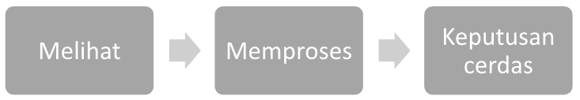
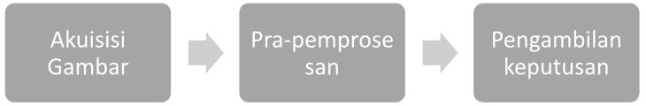
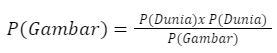
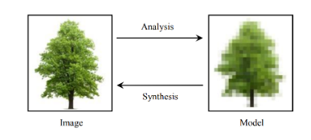
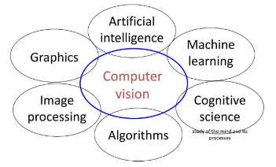

1 Pengenalan Computer Vision dan Python
Chapter ini membahas pengenalan Computer Vision dan Python dalam konteks visi komputer. Bagian pertama menjelaskan konsep dasar Computer Vision, tantangan yang dihadapinya, dan manfaatnya dalam berbagai bidang industri. Bagian kedua memperkenalkan Python sebagai bahasa pemrograman yang kuat dan populer dalam visi komputer, dengan pustaka seperti NumPy dan OpenCV yang mendukung pengembangan solusi analisis gambar dan video. Bagian selanjutnya membahas penggunaan Python untuk visi komputer, termasuk membaca gambar, melakukan operasi pada gambar, dan menggunakan algoritma untuk mengenali objek. Dilanjutkan dengan latihan praktik untuk mengaplikasikan konsep yang telah dipelajari. Terakhir, terdapat sesi tanya jawab dan diskusi untuk berinteraksi, mengatasi tantangan, dan berbagi wawasan tentang visi komputer dan penggunaan Python dalam bidang tersebut.
A. Pengenalan Computer Vision
Visi komputer adalah bidang ilmu komputer yang bertujuan untuk memungkinkan komputer memproses dan mengidentifikasi gambar dan video dengan cara yang sama seperti penglihatan manusia. Visi komputer bertujuan untuk meniru sistem visual manusia. Tujuan utamanya adalah membangun sistem buatan yang dapat mengekstrak informasi dari gambar, yaitu membuat komputer memahami gambar dan video. Data gambar dapat berupa urutan video, gambar kedalaman, pandangan dari beberapa kamera, atau data multidimensional dari sensor gambar. Tujuan utama visi komputer adalah menggambarkan sebuah scene dunia nyata dalam satu atau lebih gambar, dan mengidentifikasi serta merekonstruksi propertinya, seperti karakteristik warna, informasi bentuk, karakteristik tekstur, pencahayaan scene, dan sebagainya.


Kita dapat melihat kesamaan antara sistem penglihatan manusia dan sistem visi komputer. Seperti yang diilustrasikan dalam Gambar 1.1, prinsip dasar dari kedua sistem ini hampir sama, yaitu konversi cahaya menjadi sinyal/informasi yang berguna untuk membangun model akurat dari dunia fisik. Demikian pula, jika dilihat secara keseluruhan, struktur visi manusia dan visi komputer agak mirip, yaitu keduanya memiliki sensor cahaya yang mengubah foton menjadi sinyal (gambar), langkah pemrosesan, dan akhirnya mekanisme untuk menginterpretasi sinyal (pengenalan objek).
Perbedaan antara visi komputer, pemrosesan gambar, dan grafika komputer dapat disimpulkan sebagai berikut:
Dalam Visi Komputer (analisis gambar, interpretasi gambar, pemahaman scene), inputnya adalah gambar dan outputnya adalah interpretasi sebuah scene. Analisis gambar berkaitan dengan pengukuran kuantitatif dari sebuah gambar untuk memberikan deskripsi tentang gambar tersebut.
Dalam Pemrosesan Gambar (pemulihan gambar, rekonstruksi, penyaringan, kompresi, visualisasi), inputnya adalah gambar dan outputnya juga berupa gambar.
Terakhir, dalam Grafika Komputer, inputnya adalah sebuah scene dunia nyata dan outputnya adalah sebuah gambar.
Visi komputer membuat model dari gambar (analisis), sedangkan grafika komputer menggunakan model sebagai input dan mengonversinya menjadi gambar (synthesis). Dalam perspektif Hukum Bayes, konsep ini dapat dijelaskan sebagai berikut:

Dalam persamaan ini, P(Dunia|Gambar) merupakan Visi Komputer, P(Dunia) mengacu pada pemodelan objek dalam dunia nyata, dan P(Gambar|Dunia) adalah Grafika Komputer. Perspektif ini mendorong pendekatan pembelajaran statistik. Oleh karena itu, visi komputer berkaitan dengan pengembangan mesin-mesin yang dapat melihat dan berinteraksi dengan dunia.
Konsep ini diilustrasikan dalam Gambar 1.2.
Visi komputer saat ini digunakan dalam berbagai aplikasi dunia nyata, termasuk inspeksi mesin, pengenalan karakter optik (OCR), pembangunan model 3D (fotogrametri), analisis gambar medis, pengawasan video otomatis, biometrik, fusi dan penyambungan gambar, morphing, pemodelan 3D, dan lain-lain. Seperti yang ditunjukkan dalam Gambar 1.3., visi komputer terkait dengan banyak bidang penelitian penting.

Selain itu, visi komputer juga menghadapi tantangan etika dan privasi. Penggunaan visi komputer dalam pengawasan dan pengenalan wajah telah menimbulkan pertanyaan tentang privasi dan hak individu. Bagaimana data visual dikumpulkan, digunakan, dan disimpan perlu diatur dengan hati-hati untuk melindungi privasi individu dan mencegah penyalahgunaan teknologi.
Namun, dengan penelitian dan pengembangan yang berkelanjutan, visi komputer, sebagai subbidang ilmu komputer dengan tujuan membangun mesin agar bisa memproses dan menginterpretasikan gambar dan video seperti yang dilakukan sistem visual manusia, terus berkembang dan memperbaiki keterbatasannya, menawarkan prospek yang menjanjikan untuk masa depan.
B. Pengenalan Python
Python adalah sebuah bahasa pemrograman yang telah matang dan menawarkan sifat open source, yang berarti kode sumbernya tersedia secara bebas dan dapat diubah atau dikembangkan lebih lanjut oleh siapa saja. Sebagai bahasa yang mudah dipelajari, Python telah berhasil mengumpulkan basis pengguna yang sangat luas. Komunitas ini, yang terdiri dari jutaan pengguna di seluruh dunia, siap membantu Anda mengembangkan keterampilan dan pemahaman Anda tentang Python, baik Anda seorang pemula atau programmer berpengalaman.
Basis pengguna Python, yang beragam dan aktif, telah berkontribusi pada pengembangan berbagai alat dan perpustakaan pendukung. Perpustakaan ini adalah kumpulan rutinitas yang telah dikompilasi sebelumnya, dan dirancang untuk memfasilitasi berbagai upaya ilmiah dan teknis. Mulai dari data science, machine learning, pemrosesan bahasa, robotika, hingga visi komputer, Python telah memberikan solusi yang kuat dan fleksibel. Itulah sebabnya Python telah menjadi salah satu bahasa komputasi ilmiah yang paling penting, baik dalam lingkungan akademisi maupun industri.
Popularitas Python tentu saja datang dengan tantangannya sendiri. Seperti hutan belantara, ekosistem Python telah berkembang menjadi sesuatu yang tampak rumit dan sulit ditembus. Beberapa ilmuwan dan profesional baru dalam dunia Python mungkin merasa frustrasi dan stres saat berhadapan dengan banyaknya pilihan yang tersedia. Mereka harus membuat keputusan penting seperti perpustakaan mana yang harus digunakan untuk menggambar grafik atau editor teks mana yang harus digunakan untuk menulis program mereka.
Fleksibilitas Python datang sebagai solusi. Python mampu menangani berbagai format data, menjalankan peralatan ilmiah, dan berintegrasi dengan bahasa tingkat rendah seperti C, C++, dan FORTRAN. Python dapat digunakan sebagai “bahasa perekat”, memungkinkan integrasi berbagai skrip atau sistem yang berbeda. Jadi, meskipun ada banyak pilihan, Python menawarkan kemampuan untuk memilih dan menyesuaikan sesuai dengan kebutuhan spesifik Anda, yang menjadikannya lebih mudah bagi pengguna baru untuk memulai dan berkembang.
C. Python untuk Computer Vision
Computer Vision adalah sebuah cabang dari ilmu komputer yang memungkinkan mesin untuk memahami dan memanipulasi konten visual. Dengan adanya teknologi ini, kita bisa mendapatkan banyak keuntungan seperti dalam pengenalan wajah, deteksi objek, hingga analisis gambar dan video dalam bidang medis. Dalam bidang ini, Python telah menjadi bahasa pemrograman yang sangat berharga dan penting.
Python adalah bahasa pemrograman yang telah matang dan terbuka (open-source), membuatnya menjadi pilihan yang sangat baik untuk computer vision. Python menyediakan sintaks yang mudah dibaca dan dipahami, sehingga memudahkan pengguna baru untuk memahami dan memanfaatkan berbagai perpustakaan pendukung yang tersedia untuk computer vision. Di antara perpustakaan tersebut, ada OpenCV, TensorFlow, dan PyTorch, yang semuanya penting untuk pengembangan dan implementasi solusi computer vision.
OpenCV (Open Source Computer Vision Library) adalah perpustakaan yang sangat populer dalam bidang pengolahan gambar dan computer vision. Dikembangkan oleh Intel dan disebarkan dengan lisensi BSD, OpenCV memungkinkan pengembangan solusi computer vision dengan cepat dan efisien, baik untuk aplikasi real-time maupun offline.
Sementara itu, TensorFlow dan PyTorch adalah kerangka kerja pembelajaran mesin yang mendukung operasi yang diperlukan untuk pekerjaan computer vision. Keduanya mendukung teknik pembelajaran mesin canggih seperti jaringan saraf dan pembelajaran mendalam (deep learning) yang sering digunakan dalam aplikasi computer vision modern.
Python juga memiliki kelebihan dalam penanganan data visual. Dengan Python, pengguna dapat dengan mudah membaca, menulis, dan memanipulasi gambar dan video dalam berbagai format. Python juga mendukung operasi pra-pemrosesan yang diperlukan untuk data visual, seperti perubahan ukuran gambar, normalisasi, dan augmentasi data.
Terakhir, Python juga menawarkan kemudahan dalam visualisasi data dan hasil. Dengan menggunakan perpustakaan seperti Matplotlib dan Seaborn, pengguna dapat dengan mudah memvisualisasikan data dan hasil dalam berbagai format.
Dengan kata lain, dengan Python, computer vision menjadi lebih mudah diakses dan dipahami, baik oleh profesional maupun pemula. Python telah membuktikan dirinya sebagai bahasa pemrograman yang kuat dan fleksibel yang dapat mendukung berbagai tugas dan proyek dalam bidang computer vision.
D. Latihan Praktik
Python merupakan bahasa pemrograman yang ideal untuk belajar dan menerapkan visi komputer. Berikut adalah beberapa latihan praktik yang dapat Anda lakukan untuk meningkatkan keterampilan visi komputer Anda menggunakan Python.
Latihan 1: Membaca dan Menampilkan Gambar
Tujuan dari latihan ini adalah untuk memahami cara membaca dan menampilkan gambar menggunakan Python dan OpenCV, sebuah pustaka yang sering digunakan dalam visi komputer.
import cv2
# Membaca gambar
gambar = cv2.imread('namafile.jpg')
# Menampilkan gambar
cv2.imshow('Gambar', gambar)
cv2.waitKey(0)
cv2.destroyAllWindows()import cv2: Ini adalah perintah untuk mengimpor library OpenCV (cv2) ke dalam program Python. OpenCV adalah library populer yang digunakan untuk memanipulasi gambar dan video.
gambar = cv2.imread(‘namafile.jpg’): Baris ini membaca gambar dengan nama file ‘namafile.jpg’ menggunakan fungsi imread() dari OpenCV. Fungsi ini mengembalikan matriks NumPy yang mewakili gambar.
cv2.imshow(‘Gambar’, gambar): Ini adalah perintah untuk menampilkan gambar ke jendela dengan judul ‘Gambar’. Fungsi imshow() dari OpenCV digunakan untuk menampilkan gambar dalam jendela.
cv2.waitKey(0): Baris ini menunggu pengguna menekan tombol apa pun untuk melanjutkan eksekusi program. Nilai argumen 0 menunjukkan bahwa program akan tetap berjalan sampai tombol ditekan.
cv2.destroyAllWindows(): Ini adalah perintah untuk menutup semua jendela yang dibuka oleh program. Fungsi destroyAllWindows() digunakan untuk membersihkan semua jendela tampilan.
Latihan 2: Mengubah Gambar ke Grayscale
Banyak operasi dalam visi komputer dijalankan pada gambar grayscale. Latihan ini bertujuan untuk mengubah gambar berwarna menjadi grayscale.
import cv2
# Membaca gambar
gambar = cv2.imread('namafile.jpg')
# Mengubah gambar ke grayscale
gray = cv2.cvtColor(gambar, cv2.COLOR_BGR2GRAY)
# Menampilkan gambar grayscale
cv2.imshow('Gambar Grayscale', gray)
cv2.waitKey(0)
cv2.destroyAllWindows()- gray = cv2.cvtColor(gambar, cv2.COLOR_BGR2GRAY): Baris ini mengubah gambar dari warna (BGR) ke skala keabuan (grayscale) menggunakan fungsi cvtColor() dari OpenCV. Fungsi ini menerima dua argumen, yaitu gambar yang ingin diubah (variabel gambar) dan konversi warna yang ingin dilakukan (dalam hal ini, dari BGR ke grayscale). Hasil konversi disimpan dalam variabel gray.
Latihan 3: Deteksi Tepi
Deteksi tepi adalah teknik penting dalam visi komputer. Latihan ini bertujuan untuk menerapkan deteksi tepi pada gambar.
import cv2
import numpy as np
# Membaca gambar
gambar = cv2.imread('namafile.jpg')
# Mengubah gambar ke grayscale
gray = cv2.cvtColor(gambar, cv2.COLOR_BGR2GRAY)
# Mengaplikasikan deteksi tepi
edges = cv2.Canny(gray, 30, 100)
# Menampilkan gambar dengan tepi yang terdeteksi
cv2.imshow('Deteksi Tepi', edges)
cv2.waitKey(0)
cv2.destroyAllWindows()- edges = cv2.Canny(gray, 30, 100): Baris ini menerapkan deteksi tepi pada gambar skala keabuan (grayscale) menggunakan metode Canny dengan parameter threshold lower dan upper sebesar 30 dan 100. Fungsi Canny() dari OpenCV menghasilkan gambar dengan tepi yang terdeteksi, yang disimpan dalam variabel edges.
Latihan 4: Deteksi Wajah
Pustaka OpenCV menyediakan pretrained cascade classifiers yang dapat digunakan untuk deteksi wajah dan fitur wajah lainnya.
import cv2
# Membaca gambar
gambar = cv2.imread('namafile.jpg')
# Mengubah gambar ke grayscale
gray = cv2.cvtColor(gambar, cv2.COLOR_BGR2GRAY)
# Membuat objek face cascade
face_cascade = cv2.CascadeClassifier(cv2.data.haarcascades + "haarcascade_frontalface_default.xml")
# Mendeteksi wajah
faces = face_cascade.detectMultiScale(gray, scaleFactor=1.1, minNeighbors=5, minSize=(30, 30))
# Menggambar kotak pada setiap wajah yang terdeteksi
for (x, y, w, h) in faces:
cv2.rectangle(gambar, (x, y), (x+w, y+h), (0, 255, 0), 2)
# Menampilkan gambar dengan wajah yang terdeteksi
cv2.imshow('Deteksi Wajah', gambar)
cv2.waitKey(0)
cv2.destroyAllWindows()face_cascade = cv2.CascadeClassifier(cv2.data.haarcascades + “haarcascade_frontalface_default.xml”): Baris ini membuat objek cascade classifier untuk mendeteksi wajah. Cascade classifier adalah algoritma yang digunakan untuk mendeteksi objek dalam gambar berdasarkan fitur-fitur yang telah ditraining sebelumnya. Dalam hal ini, digunakan cascade classifier untuk mendeteksi wajah dengan menggunakan file XML yang disebut “haarcascade_frontalface_default.xml”. File XML ini berisi informasi tentang fitur-fitur yang relevan untuk mendeteksi wajah.
faces = face_cascade.detectMultiScale(gray, scaleFactor=1.1, minNeighbors=5, minSize=(30, 30)): Baris ini mendeteksi wajah dalam gambar menggunakan metode detectMultiScale() dari cascade classifier. Metode ini menerima gambar skala keabuan (gray) sebagai input dan mengembalikan array yang berisi koordinat wajah yang terdeteksi. Parameter-parameter yang digunakan adalah scaleFactor (faktor skala untuk deteksi multi-skala), minNeighbors (jumlah minimum tetangga yang harus ada agar wajah dianggap valid), dan minSize (ukuran minimum wajah yang diterima).
for (x, y, w, h) in faces: cv2.rectangle(gambar, (x, y), (x+w, y+h), (0, 255, 0), 2): Baris ini menggunakan loop untuk menggambar kotak pada setiap wajah yang terdeteksi. Koordinat dan ukuran wajah yang terdeteksi (x, y, w, h) diperoleh dari array wajah yang ditemukan sebelumnya. Kotak tersebut digambar menggunakan fungsi rectangle() dari OpenCV pada gambar asli (variabel gambar).
Harap diingat bahwa setiap latihan ini hanyalah awal. Visi komputer adalah bidang yang sangat luas dengan banyak teknik dan algoritma yang berbeda. Untuk benar-benar mahir, Anda perlu memahami teori di balik teknik ini dan bagaimana menerapkannya dalam situasi nyata.
E. Sesi Tanya Jawab dan Diskusi
Q: Apa itu computer vision dan mengapa itu penting?
A: Computer vision adalah bidang teknologi yang memungkinkan komputer dan mesin untuk ‘melihat’ dan memahami konten visual, seperti gambar dan video. Computer vision penting karena memungkinkan automasi dan analisis tingkat lanjut dalam berbagai bidang, seperti keamanan, kesehatan, manufaktur, dan banyak lagi.
Q: Mengapa Python sering digunakan dalam computer vision?
A: Python sering digunakan dalam computer vision karena mudah dipelajari, memiliki sintaks yang jelas dan bersih, dan didukung oleh banyak library dan framework yang kuat seperti OpenCV, TensorFlow, dan PyTorch. Python juga open-source, yang berarti kode sumbernya tersedia secara bebas dan dapat dimodifikasi atau diperluas oleh komunitas.
Q: Bagaimana saya bisa belajar lebih banyak tentang computer vision dan Python?
A: Anda bisa memulai dengan belajar dasar-dasar Python dan lalu belajar tentang perpustakaan seperti OpenCV, TensorFlow, dan PyTorch. Anda juga bisa mengikuti and 1 attachments
Q: Saya baru belajar Python, apakah saya bisa belajar Computer Vision?
A: Ya, Anda bisa belajar Computer Vision meski baru belajar Python. Sebenarnya, Python adalah bahasa pemrograman yang baik untuk dipelajari jika Anda tertarik dengan Computer Vision karena memiliki banyak library dan framework, seperti OpenCV, TensorFlow, dan PyTorch, yang dirancang khusus untuk visi komputer dan pembelajaran mesin.
Q: Apa yang dimaksud dengan Object Detection dalam Computer Vision?
A: Object Detection adalah teknologi dalam visi komputer yang mengidentifikasi atau mendeteksi objek dari berbagai kelas (seperti manusia, kendaraan, atau hewan) dalam gambar atau video. Teknologi ini biasanya digunakan dalam aplikasi seperti pengawasan video, sistem navigasi untuk kendaraan otonom, dan banyak lagi.
Q: Apakah memungkinkan untuk melakukan Computer Vision tanpa Machine Learning?
A: Ya, memang memungkinkan untuk melakukan tugas-tugas visi komputer tertentu tanpa menggunakan Machine Learning. Misalnya, teknik seperti pengolahan gambar, deteksi tepi, dan thresholding bisa digunakan untuk ekstraksi fitur dan pemrosesan gambar dasar. Namun, untuk tugas yang lebih kompleks seperti deteksi objek, pengenalan wajah, dan analisis video, biasanya diperlukan teknik Machine Learning atau Deep Learning.